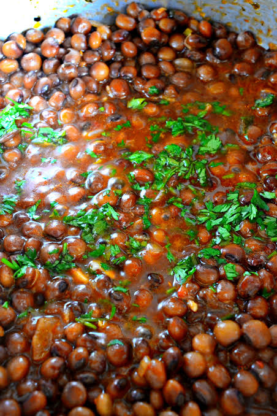

Mbaazi Recipe

Ingredients
- Whole mbaazi grains - 1/2 kg
- Water - 3 litres
- Salt - 2 tablespoons
- Cooking oil - 50 ml
- One onion
- Coconut milk
Steps to prepare
- Wash the grains and rinse them 2 to 3 times until they are clean.
- Wash the grains and rinse them 2 to 3 times until they are clean.
- Add 2 litres of water.
- Let the grains cook until ready.
- Filter out the water.
- Prepare another cooking pot and cut onion inside with the cooking oil added.
- Once ready, add the cooked mbaazi grains inside and stir
- After a min, add 250ml of water and let it rest for 2min
- Pour in coconut milk and let the mixture rest while you stir
- Serve alongside a bowl of chapati or rice
Home